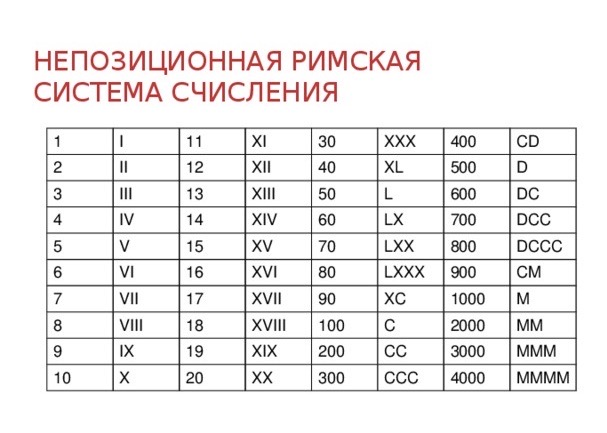

Система счисления — способ, которым записывают и представляют числа. Самая распространенная в нашем обществе — десятичная система, в которой используют цифры от 0 до 9. Но есть и другие системы счисления, их чаще всего используют в информатике и программировании.
У большинства используемых систем счисления есть основание. Так называют число, на котором начинается другой разряд. Например, для десятичной системы это число 10 — первое, которое начинают записывать двумя цифрами, а не одной. Потом разряд меняется на числе 100 — десять десяток. И так далее.
Еще у систем счисления есть алфавит — набор цифр, которые используют в той или иной системе. В той же привычной нам десятичной системе алфавит состоит из цифр от 0 до 9, а дальше уже приходится комбинировать несколько цифр. У систем с бо́льшим основанием алфавит может быть более длинным, поэтому для «дополнительных» цифр придумывают новые обозначения. Например, в шестнадцатеричной системе наравне с привычными цифрами используют буквы от A до F.
Считается, что десятичная система стала основной, потому что в древности люди для подсчета предметов загибали пальцы. Пальцев у человека десять, и это стало удобной основой — люди стали считать вещи десятками.
По сути, система счисления — это просто способ, которым записывают число. Одно и то же число в разных системах может выглядеть по-разному, но при этом его суть останется прежней.
Например, в десятичной системе счисления число выглядит как 20. В шестнадцатеричной — как 14. А в римской записи — как XX.
Изначально разные системы счисления появились в разных обществах в зависимости от их особенностей — те же римские и арабские цифры. В современном мире назначение у них немного другое. Дело в том, что люди привыкли мыслить десятками, а вот компьютеры — нет. Компьютеры изначально воспринимают числа в двоичной системе счисления, в которой существует только две цифры: 0 и 1. Всё, что больше единицы, уже считается числом из двух и более разрядов. Например, для десятичной системы числовой ряд выглядит так: 0, 1, 2, 3, 4, 5, 6… А для двоичной — так: 0, 1, 10, 11, 100, 101, 110…

Так называют системы, в которых не важна позиция цифры в числе. Где бы цифра ни находилась, она всегда имеет одно и то же значение. Ярким примером непозиционной системы счисления является римская запись. Символ X всегда будет означать десятку, а символ V — пятерку, в каком бы месте их ни поставили. Даже в числах вроде IV, где I перед V означает «-1», I всё равно будет единицей, а V — пятеркой. От положения цифры зависит только ее знак, но не ее вес.
Непозиционные системы используются редко. В них нет нуля, нет дробных чисел и других инструментов, которые бывают важны в современных вычислениях.
Сюда относятся десятичная, двоичная и большинство других современных систем счисления. В таких системах есть разряды, зависящие от позиции. Значение цифры меняется в зависимости от того, в каком месте она находится. Например, в числе 15 пятерка означает «пять единиц», а в числе 54 — «пять десятков». Позиционные системы счисления в свою очередь делятся на две категории — однородные и смешанные.
Однородные системы — такие, в которых правила записи одинаковые для всех разрядов. В каждом разряде можно использовать один и тот же алфавит. Десятичная система именно такая. И в единицах, и в десятках, и в сотнях или тысячах мы пользуемся цифрами от 0 до 9.
Смешанные системы — такие, где у разных разрядов различаются правила записи или даже основание. Например, система подсчета времени. У разряда «минуты» основание 60, и минуты можно обозначать числами от 0 до 59. На 60 число переходит в разряд «часы». А у разряда «часы» основание 24, и количество часов можно обозначать цифрами от 0 до 23. На 24 число переходит в разряд «сутки». И так далее.